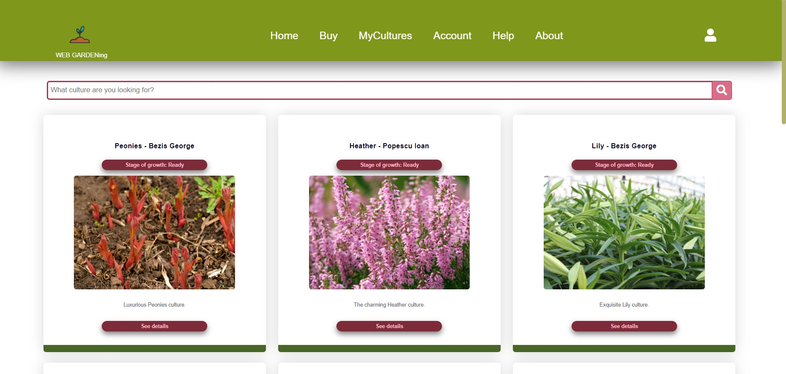
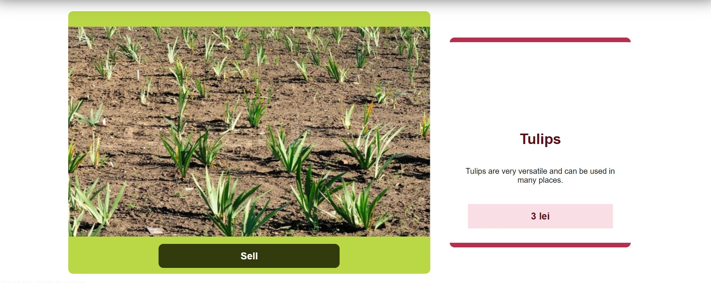

1.Home Page
On the home page you can see several images of several cultures of some users.

WEB GARDENing
On the home page you can see several images of several cultures of some users.
On the buy page you can search for cultures that you are interested in and see a variety of the cultures from our website.
If you click on one of the cultures, a new page will appear where you can purchase a culture or mention that you are interested in that culture.
You can also see information about the culture and its price
In the "MyCultures" section you can see your cultures.

If you click on one of your cultures, a new page will appear where you can see your culture.
You can also see tips for growing your culture. And you can edit your culture page.
If you click on the card with the "+" sign on it you can add a new culture.
A new page will appear:
When you add a new culture, you must synchronize the sensors so that the website can offer you culture care advices.
You can Login if you click on "Account" link, or on the user-icon in the right-top corner.
If you login as admin you have access to reports or you can make changes regarding the users and their content .

If you login as user you can edit your account or delete your account.
If you click on the shopping cart icon, you can see what you have in your basket.
On the about page there is some information about the services offered by our website and the names of the founders.